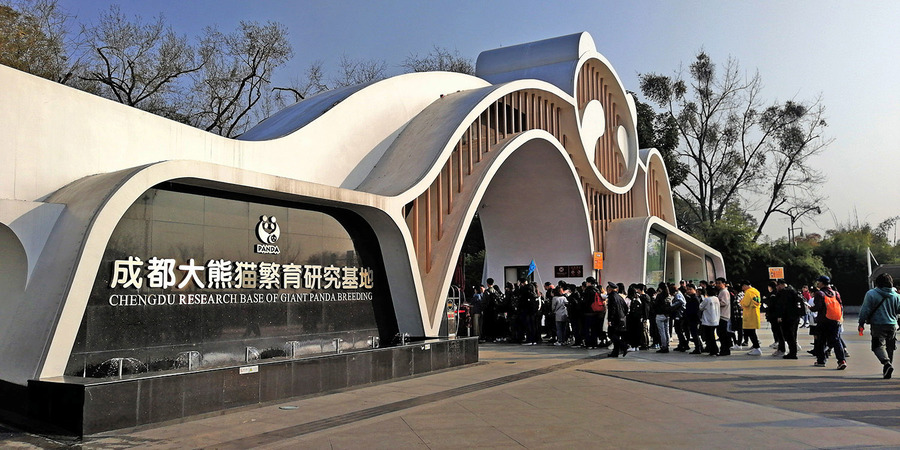
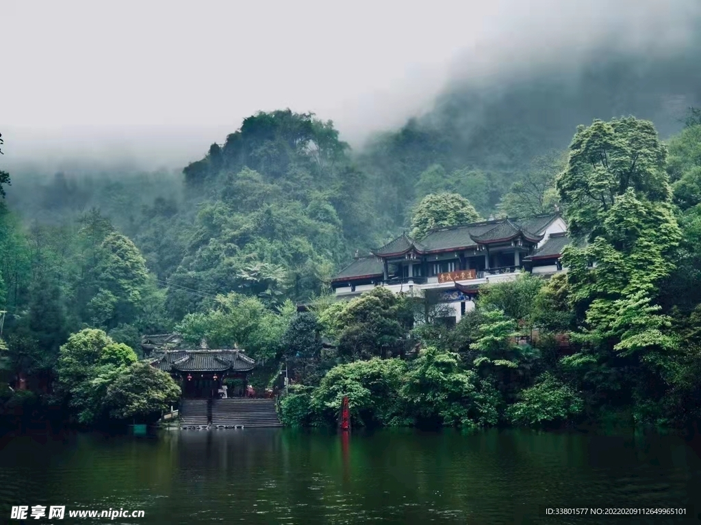
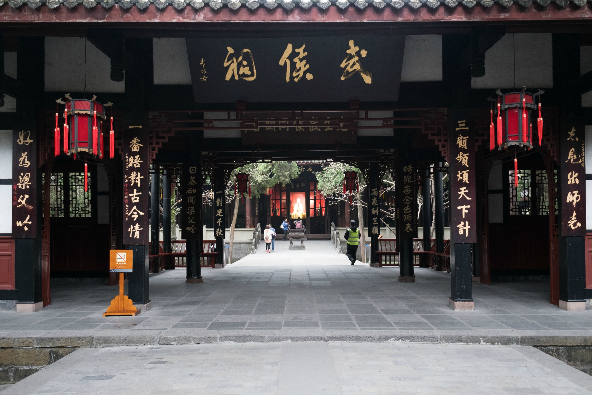
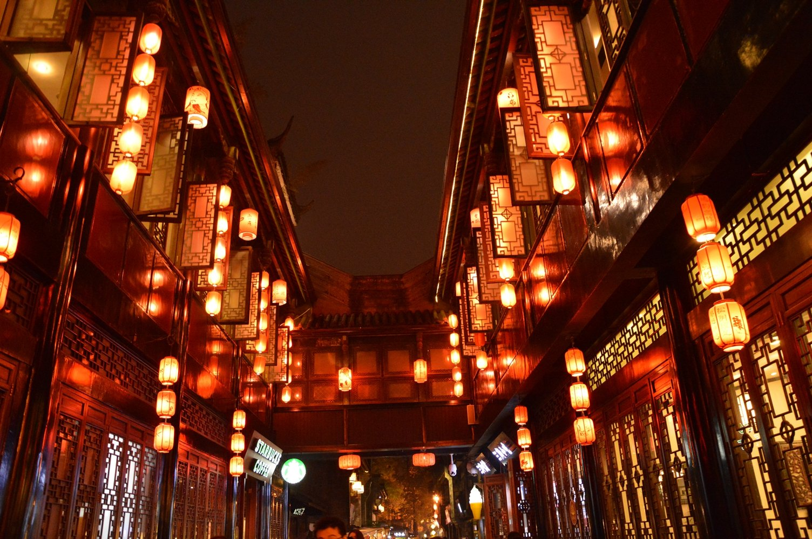
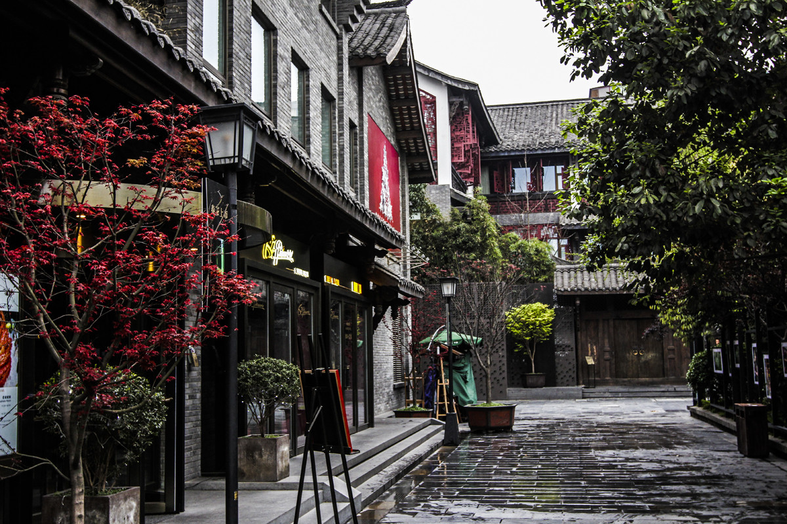

大熊猫繁育研究基地
与国宝大熊猫亲密接触，看滚滚卖萌、吃竹子，是成都必打卡的景点。
名胜古迹，自然风光
天府之国，处处是景

与国宝大熊猫亲密接触，看滚滚卖萌、吃竹子，是成都必打卡的景点。
世界文化遗产，两千多年前的水利工程，至今仍造福川西平原， feat. 鱼嘴、飞沙堰、宝瓶口。

道教发源地之一， forested peaks，幽静清凉，与都江堰并称「青城天下幽」。

纪念诸葛亮与蜀汉先主的祠堂，红墙竹影，三国文化的重要象征。

成都版清明上河图，古街、小吃、手工艺，夜景尤为迷人。

由宽巷子、窄巷子、井巷子组成，老成都院落与现代休闲的结合。